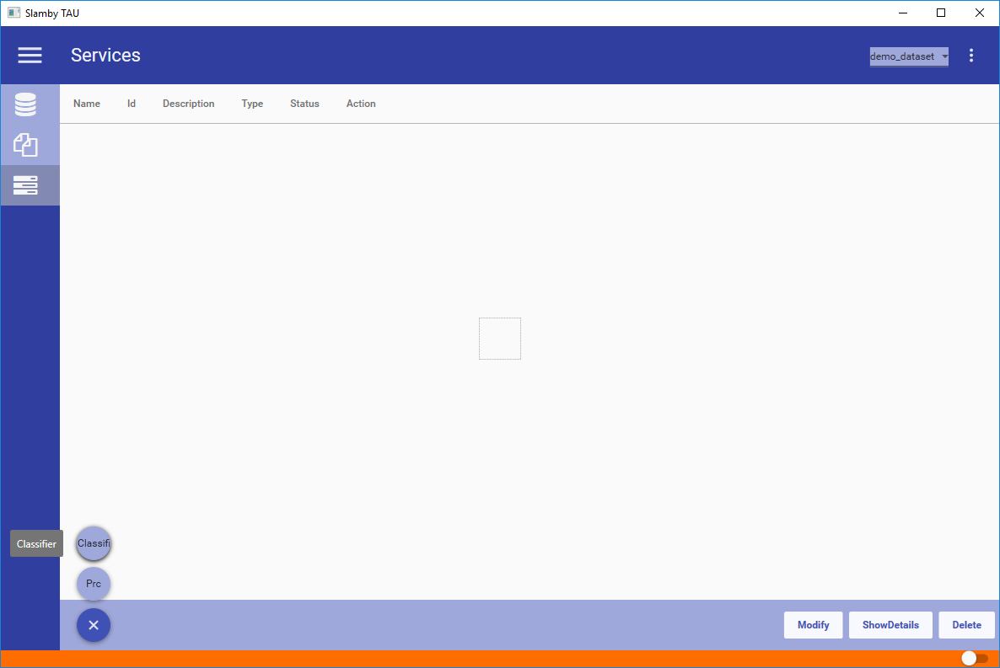
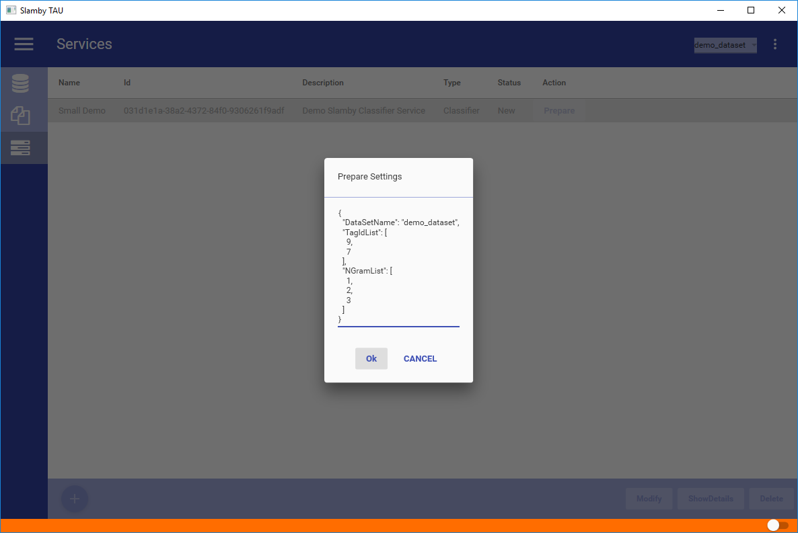
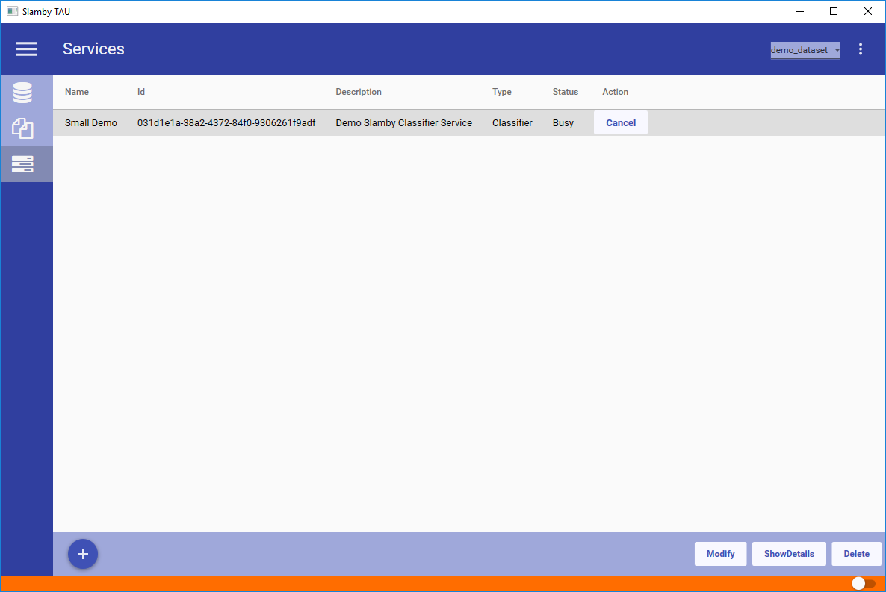
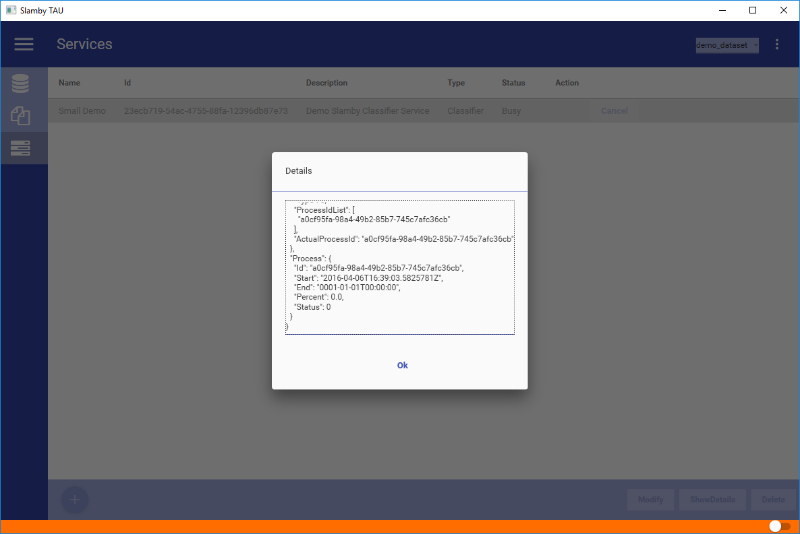
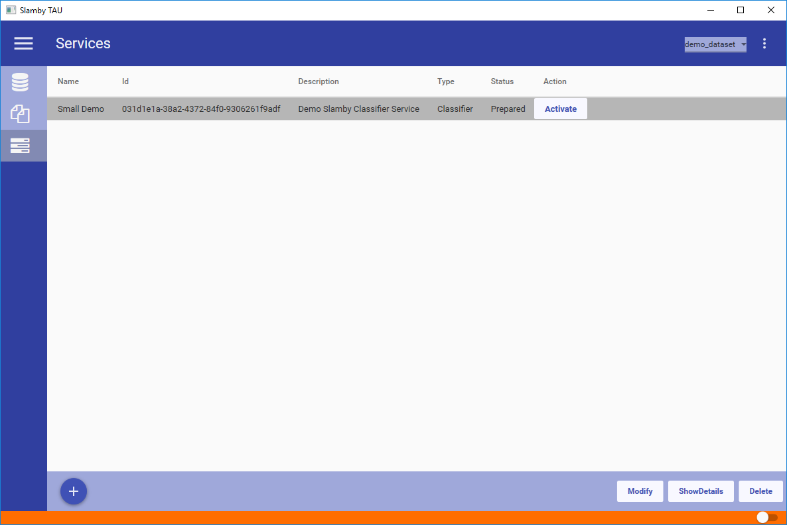
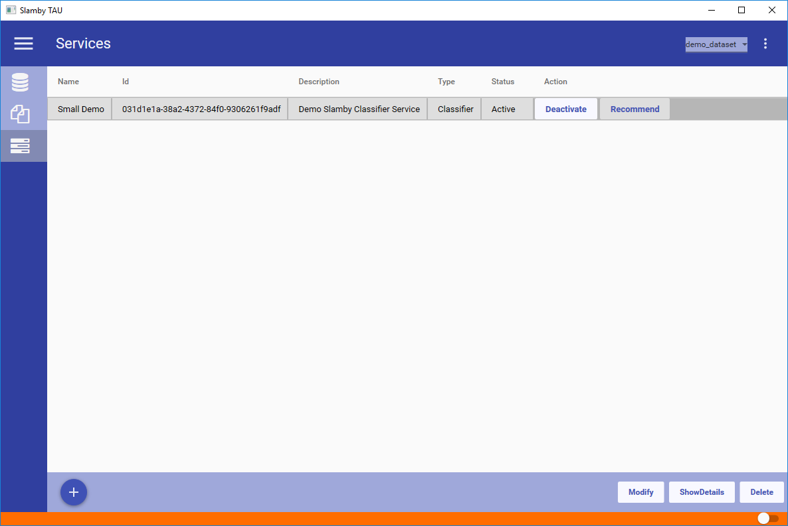
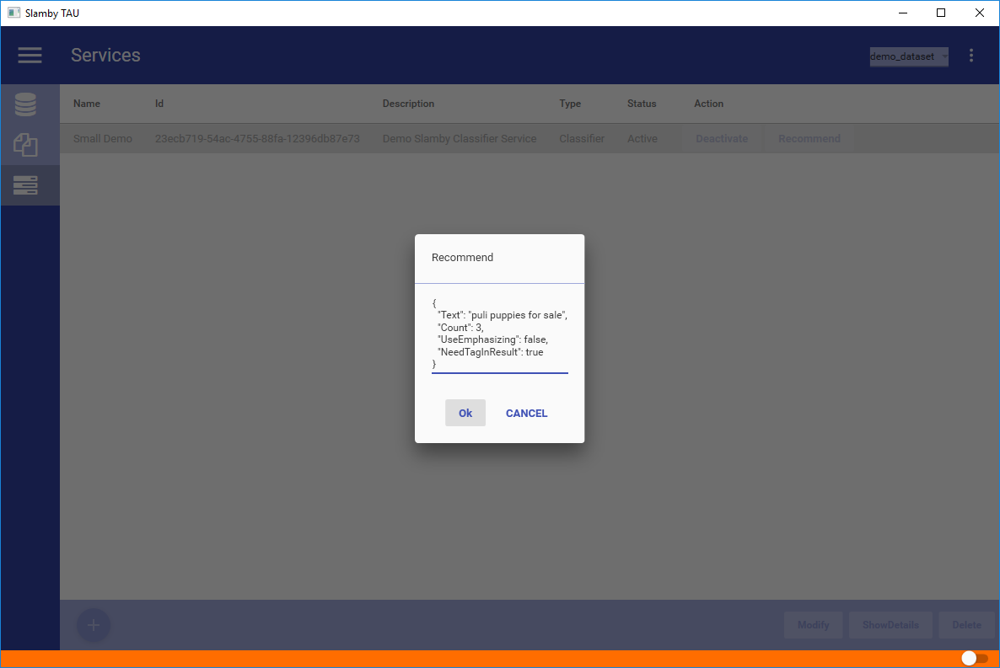
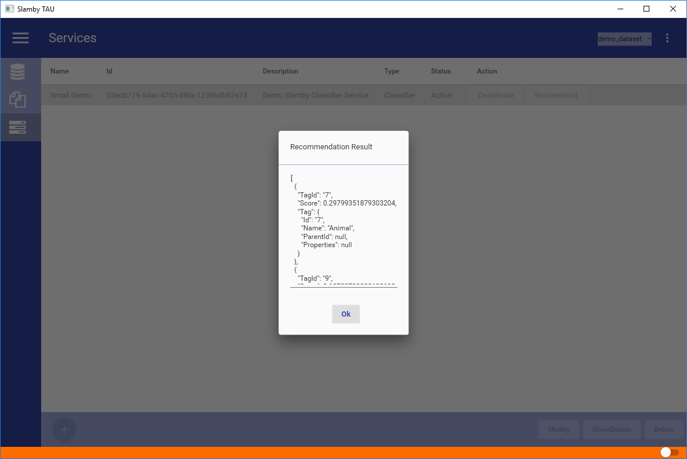
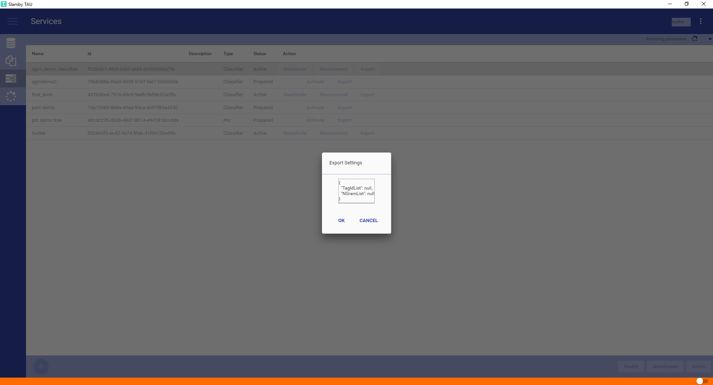

Using Slamby you can freely create data processing services. Each service has a dedicated API endpoint that you can use for data processing. Each service has custom settings availability to create a customized processor.
Service creation steps:
| No. | Stage | Description |
|---|---|---|
| 1. | Create Empty Service | To create a service, first step is to create an empty one. During this process you can select the type of the service, provide the name and description of it. When the service is ready, the service unique ID already exists. After creation process is done the service status is New |
| 2. | Preparation | Next step is to prepare the service. During this process you can set your custom settings about the training process. When preparation starts, service status will be changed to Busy. When the preparation finishes, the status will be changed to Prepared. |
| 3. | Activation | Prepared services can be activated. When a service is prepared it means the training and setting process is ready, the service is ready to use, all the required files are ready to use. Without activation you cannot use the service. Before activation you can set your custom settings about the API endpoint to customize your data processing. During activation Slamby server reads the service and related files, opening an available API endpoint, loading the service into memory and become ready to serve your requests. When the service is activated, the status will be changed to Activated. |
| 4. | Test a Service | You can test your activated service by clicking on the recommend button. A test window pops-up with the available service details as a JSON document. You can fill it out and send your request to the service API endpoint. After sending your request you can see the response. |
Currently Available Services:
| Name | Description |
|---|---|
| Classifier | Text Classification service, using Slamby's Twister classification technology. High accuracy level, managing high number of categories, managing training database mistakes. |
| PRC | Similar Text Recommendation & Keyword extraction service. Analyzes a given text, automatically highlights the keywords and looking for the most similar documents from a given tag array. Use it for similar product recommendation, or product duplication checking. |
Text classification service using Slamby Twister classification technology. Easily create classification service with high capacity and accuracy.
Benefits of using Classifier Service:
| Name | Description |
|---|---|
| Algorithm | Slamby Twister. |
| High Accuracy Level | 95-99% accuracy level. Generally 30% higher than industrial average and 30%+ higher than Naive Bayes classifiers. |
| Managing High Volume of Categories | Managing thousands of categories with the same accuracy level. |
| Fast Decision Making | Ultra-fast classification. Depends on your available resources, starts 5/sec classification performance - using 1000 categories and 30 words input text size. Up-to thousands / sec capacity. |
| Managing Training Dataset Mistakes | Effectively managing mistakes in the training dataset. Specialized for real-life needs, providing the same accuracy level, managing mistakes up to 30%. |
| Automated Decision Making Support | Use score to predict the quality of the recommendation. Using score, define your threshold for automated decision-making. |
| Language Independent | Slamby Twister is completely language independent, providing the same accuracy level in Asian and Arabic languages (such as Malaysian, Thai, Vietnamese) then in others. |
Empty Service Window example:

To create a Classifier Service, provide the required name and a short description of it. Select Classifier as a type of service, and click on the Ok button. The service is going to be displayed with New status.
Example Classifier Service Creation First Step:
To prepare Classifier Service, you can provide your custom settings as a single JSON.
Available settings:
| Name | Description |
|---|---|
| DataSetName | Source Dataset name that you are going to use to create Classifier Service. During the preparation process the given dataset will be used to train the service. |
| TagIdList | Tag IDS that you are going to use for classification. When you keep it empty, all the Leaf Tag Ids will be used for classification. |
| NGramList | Set the n-gram list you would like to use during your classification. When your n-gram setting is 1,2,3, Classifier service will create the classification model for the given 1,2,3 grams. |
Tip: to select your custom Tag Ids and paste it into the JSON setting, select your required Tags in Data>Tags, and press ctrl+c, then ctrl+v in the json document. The selected Tag IDs array will be pasted as a JSON array.
Example Preparation Setting Window before preparation:

Example service with Busy Status:

Example service with detailed status information - You can see the preparation process in the Percent field of the actual process:
Tip: you can easily get the process status by process id.

Example service with Prepared Status:

To use a Classifier Service, it needs to have Activated Status. During activation process, all the service related files load into the Server Memory and opening a dedicated API endpoints that is able to process your requests.
To activate a service you can use your custom activation settings.
Available activation settings:
| Name | Description |
|---|---|
| EmphasizedTagList | Tag IDs to use for emphasized classification. In this case the selected Tag Names will be modified the classification. |
| TagIdList | Selected Tag IDs from the prepared list to use for classification. In the case of Null value, all the prepared Tag IDs will be used. |
| NGramList | Which n-gram model would you like to use during the classification. You can select from the prepared model. |
Tip: try Classifier Service with different activation settings to get the maximum result.
Example Classifier Service Activation JSON:
Example Classifier Service with Activated Status

To test Classifier Service, click on the Recommend button. Fill the JSON setting input form with the available settings and send your request to the Service API endpoint.
Available JSON settings:
| Name | Description |
|---|---|
| Text | Text to analyze by the Classifier Service. This text will be analyzed and used for classification. |
| Count | The response tag number to display. |
| UseEmphasizing | When Emphasize function is enabled, here we can set to use it for classification. |
| NeedTagInResult | When it's value it true we can see a detailed response by tags - such as Tag Id, Tag Name, Tag Parent ID and related properties. |
Example Recommend JSON as request:

The response contains the following fields and values:
| Field Name | Description |
|---|---|
| TagId | Recommended Tag ID |
| Score | Quality Score related to the Tag. Number between 0-1, where higher is better. Score defines the probability relevant order, but Score is not probability |
| Tag.Id | Tag ID |
| Tag.Name | Tag Name |
| Tag.ParentId | ParentId of the recommended Tag |
| Tag.Properties | Related properties by the recommended Tag. |
Example Classifier Service JSON response:

When a Classifier Service is prepared, you can export the available dictionaries. Click on the export button and fill the required setting json form:
